This tutorial covers how to use the Skyline audit log. The audit logging system keeps track of all document modifications and displays them in an interactive grid, similar to the Document Grid. It benefits from all the features of the Document Grid, such as creating report templates, sorting by columns and editing cells, for example for adding a Reason to a log entry. One of the design goals of the audit log was to give anyone the ability to reconstruct the state of a document, given only the audit log and the original data. This makes it an invaluable tool for a researcher using Skyline. As you will see, the audit log also makes the “Undo-Redo” feature more usable by providing more specific change messages and allowing you to undo changes in the audit log grid itself. To demonstrate important benefits of the audit log, this tutorial is based on the Absolute Quantification Tutorial, in which the absolute abundance of a target peptide is determined using Selected Reaction Monitoring (SRM) mass spectrometry by creating an external calibration curve with an internal standard heavy labeled reference peptide. This tutorial will be mostly focused on how to configure the audit log, how your actions are logged and how to read and work with the audit log. If you find you want to learn more about absolute quantification, you should refer to the Absolute Quantification Tutorial directly, which covers the topic in more detail.
To start this tutorial, download the following ZIP file:
https://skyline.ms/tutorials/AuditLog.zip
Extract the files in it to a folder on your computer, like:
C:\Users\tobiasr\Documents
This will create a new folder:
C:\Users\tobiasr\Documents\AuditLog
The folder should contain a total of 9 RAW files, which you will import into Skyline later.
Note: In configuring Skyline for this tutorial, be sure to follow the steps below in the order presented to avoid creating audit logs of these initial setup steps.

The document settings in this instance of Skyline have now been reset to the default, but you may still have an audit log entry describing what it took to get from any previous settings back to the defaults.
Now open the audit log by doing the following:
This should bring up the Audit Log view in its default configuration as shown below:
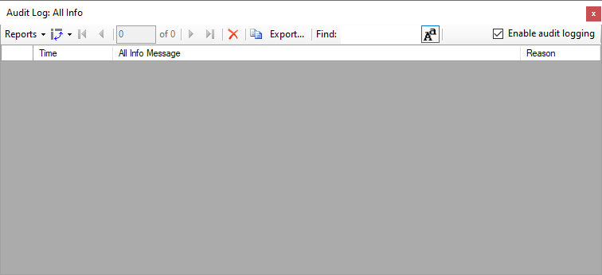
In the top right corner, you can see that audit logging is currently enabled, which is the default. By unchecking the box, audit logging can be disabled. Initially the audit log is showing its default column configuration, displaying the Time, All Info Message, and Reason columns. These columns will be explained in more detail and you will learn how to customize the columns in this grid. Keep this window open throughout the tutorial to observe how log messages appear as you interact with Skyline.
Before you insert a new peptide into the document, you need to configure the transition and peptide settings for this experiment as follows:
After you click OK, several messages will appear in the audit log window. Before taking a closer look at the audit log, first configure the peptide settings as follows:
Now the Audit Log view should look like this:
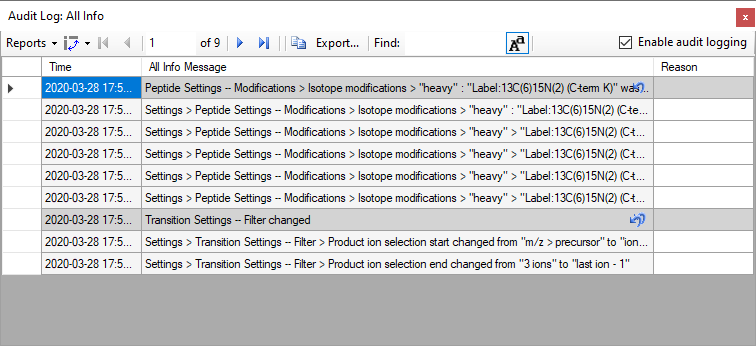
Each dark gray message and all messages below it until the next dark gray message or the end of the audit log represent a single undoable operation. The transition settings and the peptide settings were changed, which creates a total of two audit log entries. By default, new messages appear at the top like an email inbox. Looking at the first entry when the transition settings were changed, the gray message is a one line summary of the entire entry: Transition Settings – Filter changed. This message is called the Undo-Redo message, because it is also used in the Skyline Undo and Redo dropdown lists. To see this, return to the main Skyline window where you can:
You will see a list of the changes you have made to the Skyline document like this:
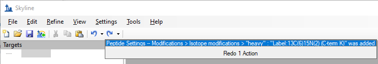
Before audit logging was introduced into Skyline, both messages here would have only said Changed settings. Therefore, even if you have audit logging disabled, you can still benefit from it through improved Undo and Redo descriptions.
Return to the Audit Log view. The next five messages under the Undo-Redo message are the All Info messages, which describe every change in detail. Log messages will tell you exactly where a setting changed. For instance, the first message reads Settings > Transition Settings – Filter > Product ion selection start changed from “m/z > precursor” to “ion 3”. Recall that this is exactly where we navigated earlier to select the collision energy. The “greater than” symbols indicate that a menu item, while the “--" indicates that what follows is a tab, such as the Filter tab. Next look at the message above, which describes the changes you made to the peptide settings. Note that the Undo-Redo message is a concise description of the isotope modification you added. Looking below at the All Info messages, you can see that the audit log contains the exact definition of the modification you added, despite you not having configured it manually. This is to allow others to reproduce those changes in the future, even if they do not have this particular modification in their Skyline instance, in which case they would have to create it manually.
Again, looking at the Audit Log view, you should see that there is a single leftward curving arrow next to the audit log entry at the top that describes the peptides settings changes. This is the same arrow as on the Undo button in the toolbar.
This should make the audit log entry disappear and undo the change.
In the main Skyline toolbar and you should see the Redo button that was previously a grey arrow pointing rightward, turn blue. To see the dropdown list of changes you can redo:
You will see the list shown below.

You can see the change you just undid through the Audit Log grid.
Now return to the Audit Log grid and you will see that the audit log entry is back. Note that next to the other audit log entry below it is an icon with two undo arrows. This indicates that if you undo this change, all changes made after this one will also be undone. In this case undoing the transition settings change entry will also undo the peptide settings change entry. This exactly how undo works when using the undo dropdown list in the toolbar. You can undo back to a certain point in the document history, but you cannot revert a single change in the middle of the list. Note that once you close Skyline and open the document, those undo arrows will disappear from the audit log, since only changes made during your current Skyline session can be undone or redone, again consistent with the Undo and Redo buttons and menu items.
To add a peptide target to your new document perform the following steps:
The form should now look like this:
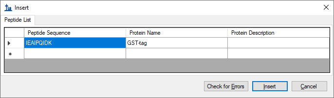
The Targets view should show the newly added peptide with a light and a heavy labeled precursor:
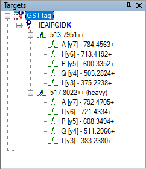
If you do not see all of the elements shown above, do the following:
Refer to the Audit Log grid and you should see a new message as the first row indicating that you inserted the peptide IEAIPQIDK. There are no other detailed messages about this change. The audit log entry consists of a single audit log messages as shown below:

Note that there is a magnifying glass icon next to the new audit log entry. This appears whenever there is extra information associated with an audit log entry.
This will bring the Audit Log Extra Information form as shown below:
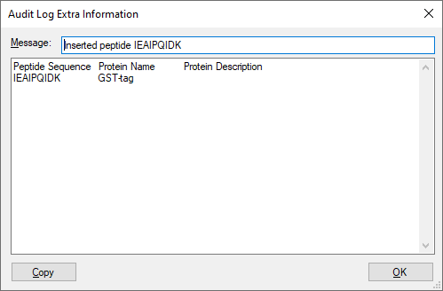
The extra information window shows all the information that was pasted into the grid when inserting the peptide, including the column header names. The cell values are separated by tab characters, which means you can copy entire rows from this window and paste them into the Insert Peptides form you just used to reproduce this operation.
Before continuing, you should save the document.
In the Windows File Explorer, you should see a file called “AuditLogTutorial.skyl” (along with AuditLogTutorial.sky and .sky.view). If you do not see these file extensions, you may need to show file extensions in the File Explorer. This .skyl file is the audit log file. If you open it in a text editor like Notepad, you will see XML format text. If you are interested in the format, refer to the audit logging paper (in review at Bioinformatics). The audit logging file (like the .sky.view which contains window layout and selection information) can be deleted at any time without damaging the document stored in the .sky file.
Your next task is to import the mass spectrometer data files from the SRM runs for this experiment:
After the import completes, Skyline should have created 9 new replicates. The Audit Log view should now look like this:
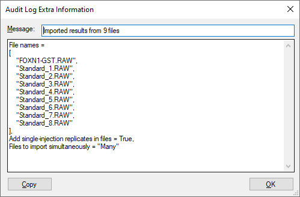
The audit log did not create copies of the files that were imported, but rather just stored the paths of files (here shortened to just the file names). The first 9 detailed messages are the paths of the 9 raw data files you imported. The last two messages describe the settings in the Import Results form when you clicked the OK button.
Note that the primary entry again has a magnifying glass around a plus sign, which means it has extra information associated with it. This is always the case for a series of dialogs such as when importing results, where you configure a process that modified the document, instead of directly modifying the document like when changing the settings.
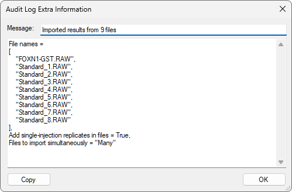
The extra information for wizards like the import results wizard does not contain any additional information, but rather a neatly formatted and more concise version of what is in the audit log. If you have any programming experience, this format might look familiar to you.
Now, configure quantification settings to help Skyline calculate a calibration curve:
This adds the audit log entry shown below:
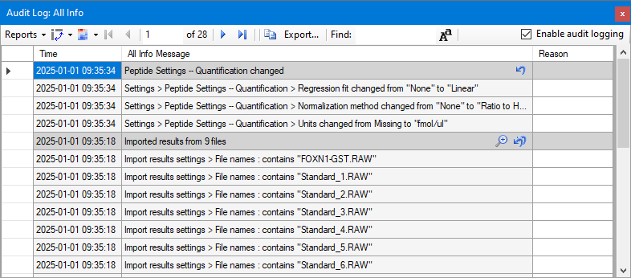
The changes made are listed under the heading Peptide Settings – Quantification changed and each step is captured in a detailed message describing it with enough detail that the step could be repeated.
Next, specify the analyte concentration for each replicate using the Document Grid as follows:
| Standard | 40 |
| Standard | 12.5 |
| Standard | 5 |
| Standard | 2.5 |
| Standard | 1 |
| Standard | 0.5 |
| Standard | 0.25 |
| Standard | 0.1 |
The Document Grid: Replicates form should look like this:
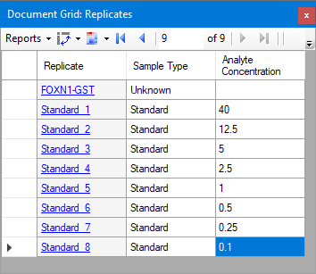
Review the Audit Log grid to see that it shows the following:
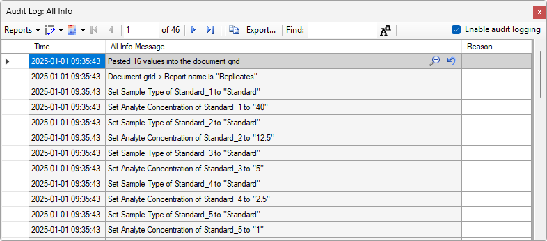
The Undo-Redo messages indicates that 16 values were pasted into the Document Grid. There are a total of 17 detailed messages. The first message indicates that the Replicates report was used. This is important because in order to reproduce this change made in the Document Grid, you need to know what columns were present. The follow 16 messages describe each cell change, one for each of 8 changes in the Sample Type column and 8 in the Analyte Concentration column. Since you pasted data, this audit log entry again contains extra information.
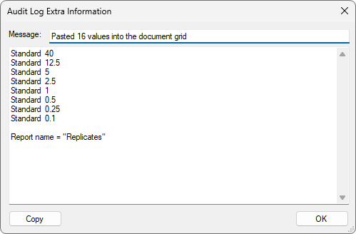
This displays a much more concise view of the data that was pasted into the document and again the data can be easily copied and pasted to reproduce the operation. The report that was used is also indicated at the end of this extra information – in this case: “Replicates”.
Next, you will look at the integration boundaries of the peptide in the FOXN1-GST sample:
Now you should see the chromatograms of the IEAIPQIDK peptide in the FOXN1-GST sample.
By selecting either the light or heavy precursor in the Targets view you can review the integration boundaries for that precursor.
You should see something like the following:
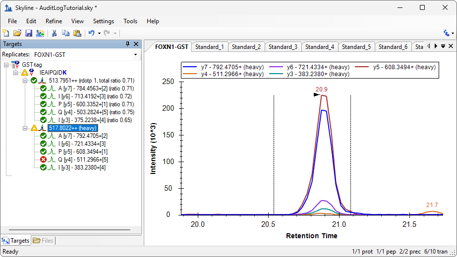
The integration boundaries look acceptable and changing them may simply add variance to the peak area calculations. However, you might feel the peak could be better centered within the integration range. To make a change like this, do the following:
Three new rows should appear in the Audit Log view, as shown below:
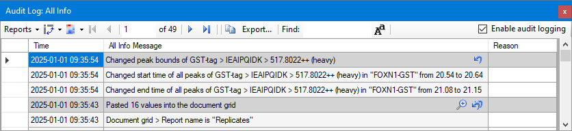
Note that the new log entry describes a change related to an item in the Targets window, it uses a format similar to the one seen previously when changing document settings. Generally, the audit log will refer to items in the Targets view by Protein/Peptide List > Peptide > Transition group > Transition.
When someone else reads this audit log, this integration boundary change might seem arbitrary without any explanation. Or, months or years later, you may have forgotten why you made this change. To document your reasoning do the following:
The audit log should look like this:
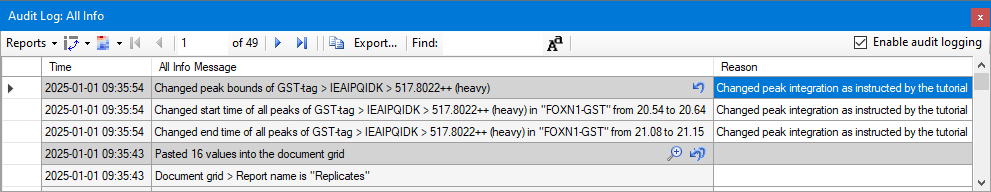
Note that the reason entered in the dark gray row is shown in all three new rows. This is the overall reason for the change. To give a different reason for each row, you would need to use a report field called Detailed Reason. You will learn how to customize the columns shown in the Audit Log view below.
Now view the calibration curve you have configured as follows:
The curve fits the first four points, but not as well for the points closer to zero. Use the scroll wheel to zoom in on the lower four points.
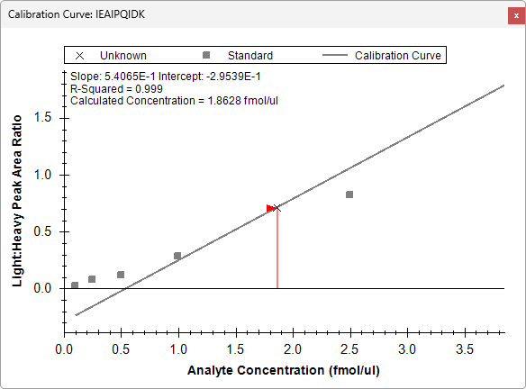
You can see that the last three points fall off the line, which indicates that they are below the limit of detection for this peptide. These three and the fourth lowest concentration point may also be pulling the regression line away from the fourth highest concentration point at 2.5 fmol/ul. To create a better fit for the four highest concentration points, you can exclude the four lower points from the regression as follows:
If you zoom out on the other four points, you should see that the curve fits them better now, and the R-Squared value in the top left corner of the graph should become 1.
Review the Audit Log grid and, you should see four new entries, one for each point you excluded from the calibration:
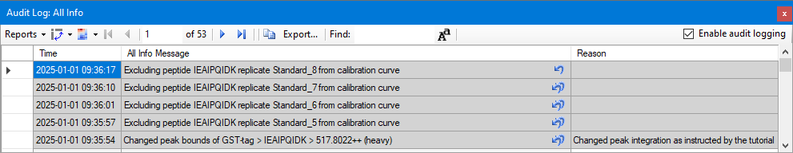
You should again add a reason to explain why the replicates were excluded by doing the following:
You now have a growing audit log and it has become difficult to see all your changes at once. The Audit Log view is based on the Document Grid and can, therefore, be customized just like the Document Grid:
There are three default reports you can choose from (Undo Redo, Summary, and All Info):
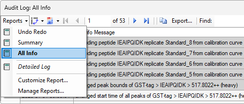
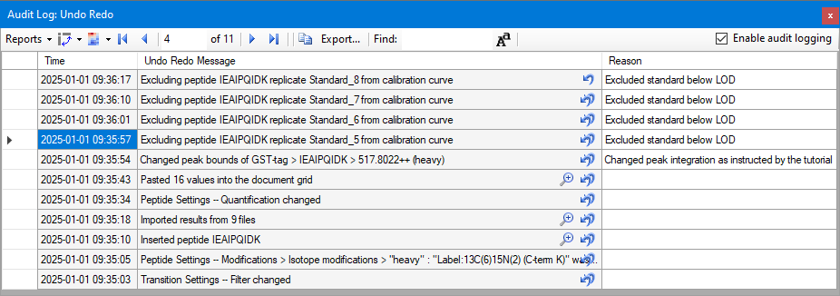
Now the Audit Log view only displays the Undo Redo messages and not the detail messages, presenting a concise overview of what you changed in the document. Going from bottom to top, your changes can be summarized as follows:
Next, you will customize the Audit Log view manually to show other columns:
The filled-out form should look like the following:
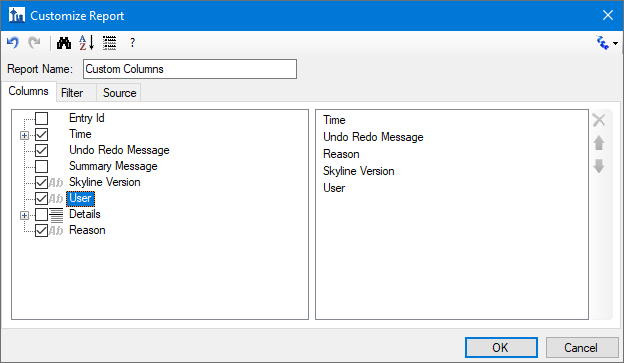
The Audit Log should now look like the following, although you will have a different User name and you might be using a different Skyline Version.
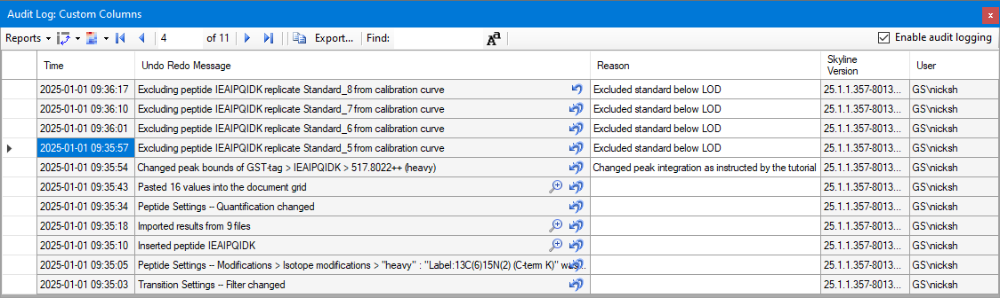
Below is a list of all of the columns you can display and their meaning:
To proceed with the rest of the tutorial you need an account established on PanoramaWeb.org or another web server running Panorama.
Panorama is a web-based proteomics data sharing platform that supports uploading and viewing of Skyline files. To upload your Skyline document into Panorama:
If you have not used Panorama before the following message should appear:
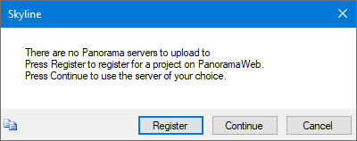
The next form should ask you for the URL of the Panorama server you want to use and your credentials.
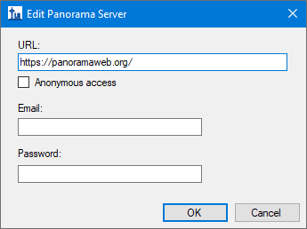
If the connection was successful, the next form should show you the Panorama server URL and the folders on the server available for upload.
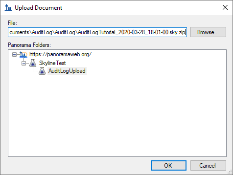
Skyline automatically creates a ZIP file containing all the files associated with your document and uploads it to the Panorama server. Click OK when asked to open the document in Panorama. You might be asked to log in to Panorama in the browser first. Once you have signed in the page should look like this:
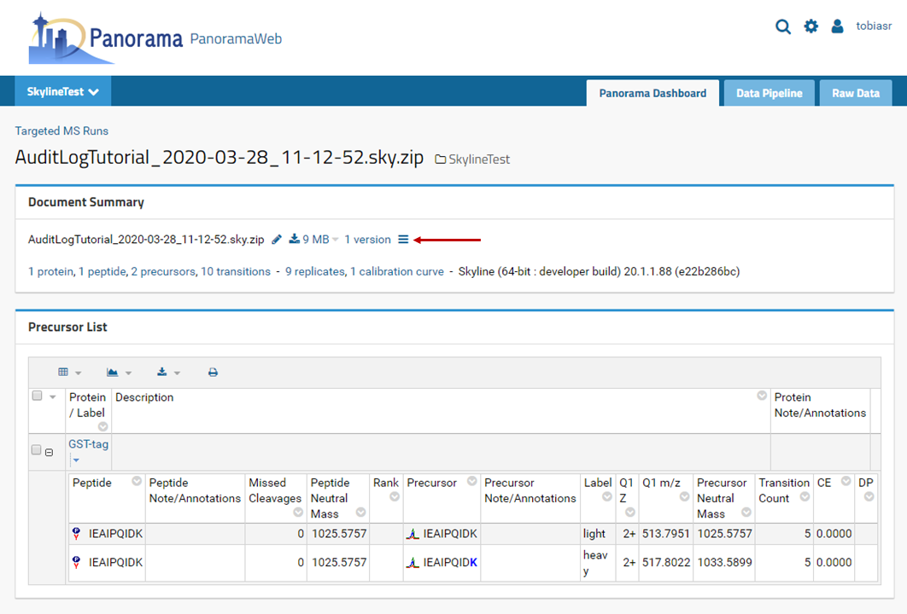
| Detailed discussion of the Panorama functionality is beyond the scope of this tutorial. Please refer to https://panoramaweb.org/sharing_documents.url for more details. |
Note the ≡ symbol next to the number of document versions. This is a link that allows you to access the audit log information for the document. If you upload a document without a valid audit log this symbol will not be shown.
Now you should see the following page:
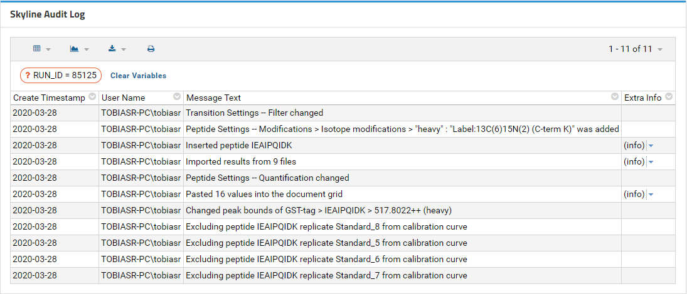
This is an audit log viewer very similar to the Audit Log grid in Skyline. For the sake of brevity, it shows Undo Redo messages only by default, but full details are available through the grid button on the left. It is very similar to the Skyline Reports menu and allows you to select, create, and customize grid views. By default, Panorama ships with the default view and AllMessagesView, but you can also create your own.
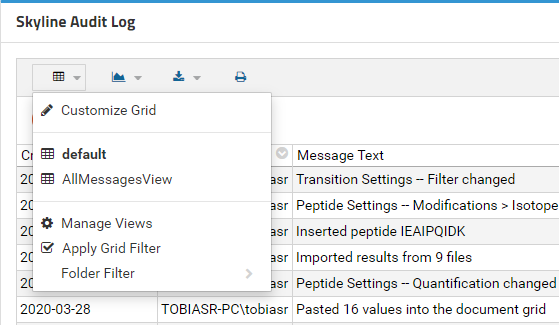
Now your page should look like this:
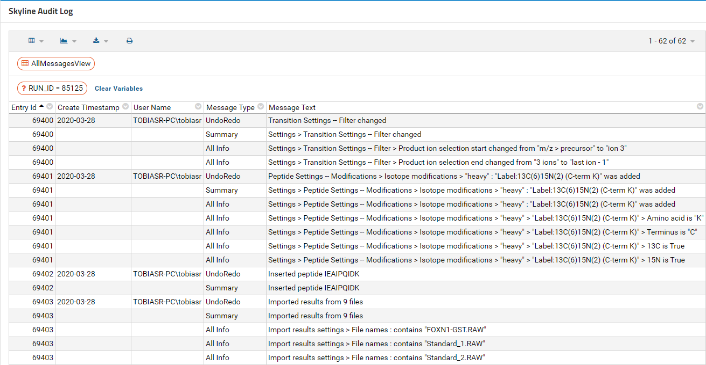
All the messages and message types in the audit log are now displayed.
This tutorial went through setting up an absolute quantification experiment to demonstrate how to use the Skyline audit log and how to upload it to Panorama. The audit log keeps tracks of all changes you make to your document and is fully customizable. It is a powerful tool to reproduce the state of a document from scratch and can be useful when working on the same document with collaborators or when requesting troubleshooting help from the Skyline team.